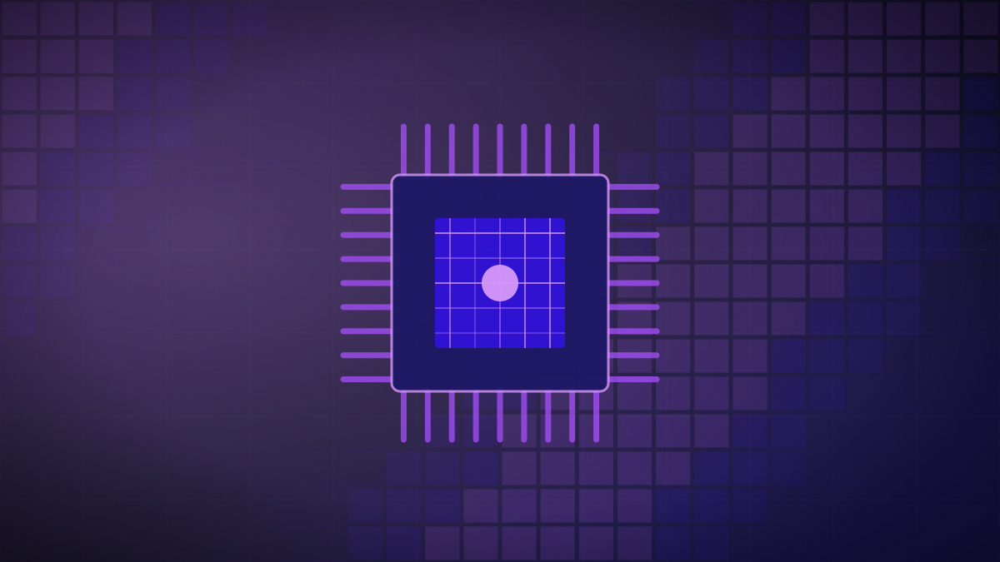

Gujarat notifies Viksit Gujarat Data Centre Policy targeting ₹6 lakh crore
The new 2026-2029 infrastructure framework seeks to attract 7.5 gigawatts of compute capacity while mandating a 51% green energy floor.

Original cover art, generated for this story. THE VISSION does not republish third-party press imagery.
- The state of Gujarat has notified its Viksit Gujarat Data Centre Policy 2026-29, aiming to attract ₹6 lakh crore in investments and 7.5 GW of compute capacity.
- The policy establishes Dholera Special Investment Region as a global-scale 'Green AI' data centre cluster, expected to house up to 7 GW of power capacity.
- Data centres operating under the policy are required to source at least 51% of their electricity from renewable energy sources.
The Government of Gujarat has formally notified the Viksit Gujarat Data Centre Policy 2026-29, an regulatory framework designed to establish the state as India’s premier hub for hyperscale and artificial intelligence data centres. The policy targets a massive ₹6 lakh crore (approximately $72 billion) in capital investments and the deployment of 7.5 gigawatts (GW) of compute capacity over the next three years.
The cornerstone of the policy is the development of the Dholera Special Investment Region (SIR) as a massive, green-energy-powered data centre cluster, which officials expect will host up to 7 GW of capacity alone. To ensure sustainability amidst rising energy demands, the policy mandates that all participating data centres must source at least 51% of their operational electricity from renewable energy sources. This green floor is designed to mitigate the heavy environmental footprint associated with next-generation AI model training and inference.
To attract global infrastructure players, Gujarat is offering an aggressive package of incentives. These include a power tariff subsidy of ₹1 per unit for 20 years, 100% electricity duty reimbursement, capital subsidies for Dholera-based facilities, and interest subsidies up to 4%. Additionally, the state will reimburse 100% of SGST on plant and machinery, offer full exemptions on stamp duty, and provide infrastructure support for captive desalination plants to meet the facilities' immense cooling water requirements.
Gujarat's policy is a direct response to the massive, power-hungry compute demands of modern AI. By pairing aggressive tax subsidies with a mandatory 51% renewable energy mandate, the state seeks to build a sustainable datacenter hub without crashing its regional power grid. This balance of economic incentives and green mandates represents the future of infrastructure competition in the AI era.
Can Gujarat's renewable energy grid scale fast enough to meet Dholera's gigawatt-level power demands without disrupting electricity supplies to local residents?
Still open. When the paper finds out, it will say so here and on the open questions page — including if it got this wrong.